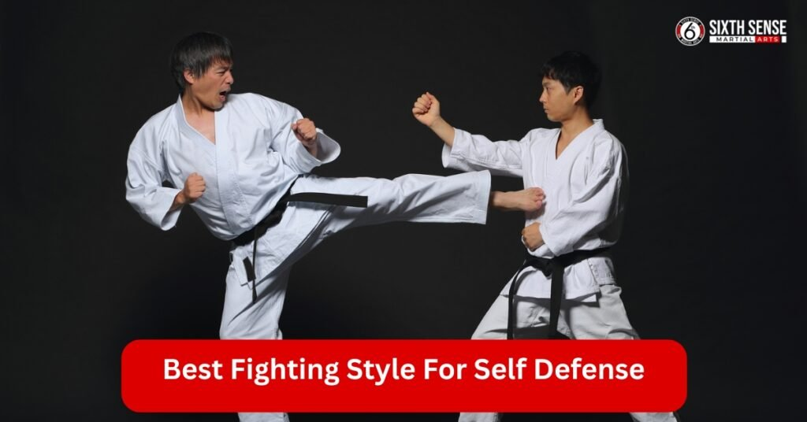
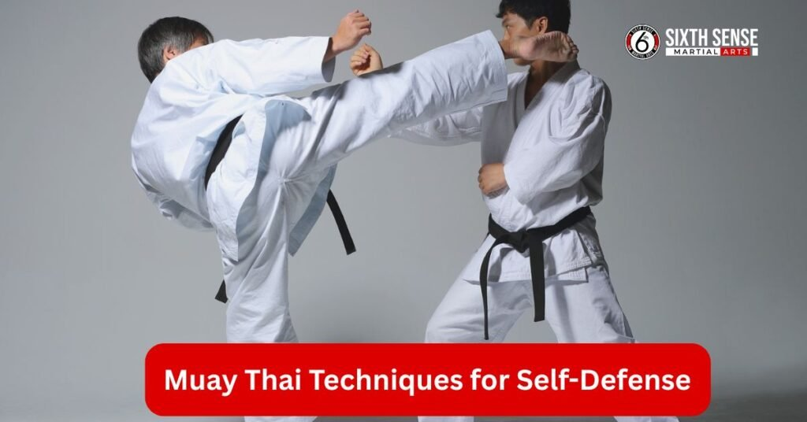
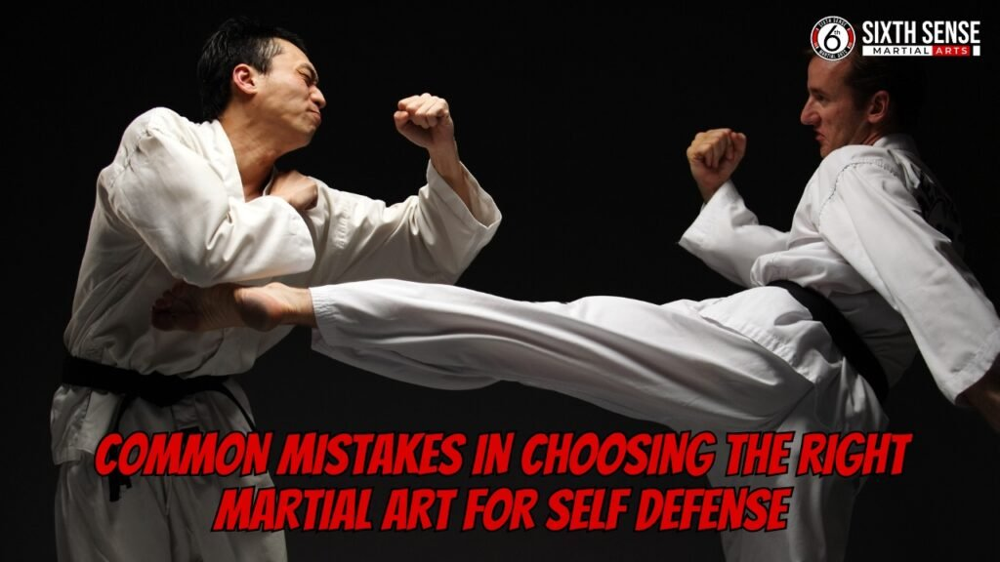

Best Fighting Style for Self Defense

When it comes to protecting yourself, knowing the best fighting style for self defense can make all the difference. Martial arts offer more than just physical strength; they teach discipline, control, and practical techniques that work in real world situations. Something unique is brought to the table by each martial art, from grappling techniques in Brazilian Jiu Jitsu (BJJ) to the powerful strikes of Muay Thai. Whether you’re facing a physical attack on the street or learning how to protect yourself in tight spaces, mastering a self defense martial art can boost your confidence and ability to respond effectively.
Why Martial Arts are Essential for Self Defense
Martial arts are invaluable when it comes to self defense. Not only do they teach you how to defend yourself, but they also provide a deeper understanding of situational awareness. By practicing martial arts, you’re learning to stay calm under pressure, which is essential in any self defense situation. In addition to physical training, martial arts also improve mental focus, decision making, and the ability to remain composed during high stress situations.
Each style offers specific skills that prepare you for various types of threats, whether it’s a single attacker or a confrontation with multiple people. From Brazilian Jiu Jitsu’s ground techniques to Muay Thai’s devastating strikes, martial arts provide a broad range of tactics to protect yourself.
What Makes MMA the Best for Self Defense?
Mixed Martial Arts (MMA) combines both striking and grappling techniques, making it one of the best fighting styles for self defense. The versatility of MMA allows you to handle various situations, whether you’re defending against a punch, attempting to control an opponent on the ground, or trying to escape from a hold. MMA fighters are trained to react to real world attacks, making it a practical choice for self defense. Whether it’s a street fight or a confrontation in a confined space, MMA’s broad skill set equips you to protect yourself against multiple opponents in any situation.
Best fighting style for self defense at Sixth Sense MMA
At Sixth Sense MMA, we offer a variety of martial arts techniques tailored to improve your self defense skills. Whether you’re a beginner or more experienced, our programs are designed to equip you with practical tools to protect yourself in real life situations. We focus on three powerful martial arts: Brazilian Jiu Jitsu (BJJ), Muay Thai, and Mixed Martial Arts (MMA). Each style contributes uniquely to building physical strength, mental toughness, and combat skills.
From controlling an opponent in BJJ to landing powerful strikes in Muay Thai and mastering MMA’s versatile techniques, our classes ensure that you are prepared for any threat. By training at Sixth Sense MMA, you’ll gain the confidence and expertise needed for personal safety, in both everyday encounters and high stress situations.
Brazilian Jiu Jitsu Techniques for Self Defense
One key technique is the Guard Position, where you use leverage to control an opponent from your back, even if they’re larger or stronger. This position allows you to defend yourself while looking for an opportunity to escape or counterattack. Chokes and Submissions are also vital in BJJ, enabling you to neutralize an attacker by applying pressure to their neck or joints, forcing them to submit without causing harm. Another important technique in BJJ is Escaping from Holds, which teaches you how to break free from grabs or holds commonly used in self defense situations. With these BJJ techniques, you’ll gain the skills necessary to defend yourself in various situations, especially when the fight goes to the ground.

Muay Thai Techniques for Self Defense
“Art of Eight Limbs,” known as Muay Thai, is a powerful striking martial art that is extremely effective in close range confrontations. One of the most effective techniques in Muay Thai is the Elbow and Knee Strikes, which allow you to inflict significant damage in tight spaces. These strikes are especially useful when an attacker is too close to land punches or kicks.
Another key aspect of Muay Thai is the Muay Thai Clinch, where you control your opponent’s posture and limit their movement, allowing you to strike efficiently or set up for a takedown. Lastly, Leg Kicks are an effective martial art technique for combat situations. are a great way to disable an attacker’s mobility, targeting the thigh or calf muscles to weaken their ability to chase or pursue you. Muay Thai’s combination of strikes and control techniques provides the perfect tools for self defense situations.
MMA Techniques for Self Defense at Sixth Sense MMA
Mixed Martial Arts (MMA) is a versatile combat sport that combines striking and grappling, making it one of the best martial arts for self defense. In MMA, Striking Techniques such as punches, kicks, and elbows are all integrated to create an effective defense system that works in a variety of situations. The Ground Control and Submissions techniques, borrowed from Brazilian Jiu Jitsu, allow you to control an opponent once the fight goes to the ground. This could be crucial in situations where you need to neutralize an attacker without causing excessive harm.
Takedowns are crucial in self defense and are a fundamental part of effective martial arts training. Joint locks are another essential technique in MMA, which allows you to safely bring an attacker to the ground quickly and effectively. With MMA’s comprehensive approach, you’ll learn how to handle an attack from multiple angles, giving you the skills necessary to defend yourself in almost any situation.
Training at Sixth Sense MMA: A Gateway to Effective Self Defense
At Sixth Sense MMA, we offer an exceptional environment for learning self defense techniques. Our training programs focus on various aspects of combat, including wrestling and judo. MMA, Muay Thai, Brazilian Jiu Jitsu, and more. Each discipline provides a unique set of tools and techniques to ensure you can defend yourself in a variety of situations, whether you’re standing or on the ground, using effective martial arts.
Our experienced instructors work closely with each student to build strength, flexibility, and awareness. The combination of personalized coaching and diverse training styles ensures that you develop the physical and mental resilience needed to stay safe in real life encounters. At Sixth Sense MMA, we empower you with practical self defense skills that are effective and easy to execute.
Why Choose Sixth Sense MMA for Self Defense Training?
Sixth Sense MMA offers a comprehensive and supportive approach to self defense training. With expert instructors, a welcoming environment, and a focus on real world scenarios, we provide the tools necessary for personal safety. Training at Sixth Sense MMA ensures you gain confidence, strength, and the ability to defend yourself in any situation. Whether you want to improve your fitness, develop practical combat skills, or simply feel safer, we are here to guide you every step of the way.
How Sixth Sense MMA Prepares You for Real World Situations
At Sixth Sense MMA, we understand that real world self defense situations require practical skills that work in everyday scenarios. Our self defense courses are tailored to teach techniques that are simple, effective, and easy to apply under pressure. We incorporate real life situations into our training to ensure that students can react quickly and confidently when faced with potential threats. From defending against grabs to dealing with multiple attackers, our programs provide the versatility needed to tackle a range of challenges. Whether it’s striking, grappling, or ground defense, Sixth Sense MMA equips you with the tools to protect yourself, no matter the situation.

Common Mistakes in Choosing the Right Martial Art for Self Defense
When selecting a martial art for self defense, many people make common mistakes that can limit their effectiveness in real world situations. Here are some key pitfalls to avoid:
- Choosing Based on Personal Preference Alone: Many people choose a martial art based solely on what they find interesting or appealing, without considering its practical applications. Some styles may focus too much on form or competition, which may not translate well into self defense situations.
- Neglecting Cross Training in Different Disciplines: Focusing on just one martial art can be limiting. While certain styles may excel in specific areas, such as striking or grappling, combining techniques from multiple disciplines, like Muay Thai for striking and Brazilian Jiu Jitsu for grappling, can provide a more versatile defense strategy.
- Overlooking Realistic Training and Adaptability: Many martial arts focus on ideal scenarios or sports based training. It’s crucial to choose a style that incorporates real world situations and teaches you to adapt to unpredictable circumstances. At Sixth Sense MMA, we prioritize realistic techniques that work effectively in everyday encounters, ensuring you’re fully prepared for any situation.
Avoiding these mistakes can help you choose a martial art that is both practical and effective for self defense.
How to Start Your Self Defense Journey at Sixth Sense MMA
Getting started at Sixth Sense MMA is simple and straightforward. Here’s a step by step guide to kickstart your self defense journey with effective martial arts.
- Contact Us: Reach out via phone or our website to inquire about our self defense classes and schedule a consultation.
- Choose Your Program: We offer a range of martial arts classes, including karate and kickboxing. MMA, Muay Thai, and Brazilian Jiu Jitsu. Discuss your goals with our team to find the best fit for you.
- Join a Trial Class: Attend a trial class to get a feel for the training environment and meet our instructors.
- Sign Up for Regular Classes: Once you’re comfortable, sign up for a membership and start your training with regular sessions.
- Commit to Progress: Stay consistent with your training, and our expert instructors will guide you through every step to develop your self defense skills.
With Sixth Sense MMA, you’re not just learning techniques, you’re building confidence, strength, and the ability to protect yourself in any situation.
Why Choose Sixth Sense MMA for Self Defense Training?
Sixth Sense MMA offers a comprehensive and supportive approach to self defense training. With expert instructors, a welcoming environment, and a focus on real world scenarios, we provide the tools necessary for personal safety. Training at Sixth Sense MMA ensures you gain confidence, strength, and the ability to defend yourself in any situation. Whether you want to improve your fitness, develop practical combat skills, or simply feel safer, we are here to guide you every step of the way.
Benefits
1. Increased Confidence
Training in martial arts enhances self confidence by giving you the skills to protect yourself in any situation. Knowing you can defend yourself increases your ability to handle stressful or dangerous situations calmly.
2. Improved Physical Fitness
Most martial arts styles provide an intense workout, improving your overall physical fitness. You’ll build strength, endurance, flexibility, and coordination, making your body stronger and healthier.
3. Practical Self Defense Skills
Fighting styles like Krav Maga, Muay Thai, and Brazilian Jiu Jitsu teach practical techniques that work in real world situations. These skills help you defend against various attacks, from physical assaults to armed threats.
4. Better Mental Focus
Martial arts training sharpens your mental focus, discipline, and ability to think clearly under pressure. The focus required for learning techniques and sparring improves your decision making skills.
5. Stress Relief
The physical activity involved in martial arts helps reduce stress levels. The intense workout releases endorphins, the body’s natural mood boosters, which can help alleviate anxiety and improve mental well being.
Customer Reviews
Muntasir Zaman
“Great gym! I came in for a session today and loved the environment and instruction. The head coach Matheus really paid attention to small details and made sure to give everyone adequate time and focus. Excited to come back!”
Ameera Abbasi
“I had gone for a free trial session and it was so fun. The instructor taught us very well, especially for this being our first time. It was a good workout and I definitely want to come back regularly!”
FunDadMo
“Great hidden jiu jitsu gym for all ages, perfect for learning self defense techniques.” The teacher is great and really knows the art.”
Ben Holland
“So excited to have a jiu jitsu gym in our neighborhood! This is what Coppell needed!”
Sana Haq
“My kids love their classes. Professional and friendly instructors ensure you learn effective martial arts for self defense. Clean and well lit space.”
Noor Ghaffar
“I’m so happy to see a good mix of guys and girls at the gym. The pricing isn’t too bad.”
Sagar deep singh
“Coach is super awesome. Soft and tough at the same time with kids.”
Shiraz
“Huge facility and very welcoming coach. Great group of people to train with.”
Adnan Sheriff
“A very clean and organized facility with highly skilled coaches who create a friendly environment for all levels.”
Mohammed Shaazuddin
“Friendly staff and coach with a great atmosphere of learning and support.”
Call to Action
Are you ready to take your Self Defence skills to the next level? Join Sixth Sense MMA today for expert led training in martial arts that will prepare you for real world situations. Don’t wait start your journey towards confidence and safety now.
Conclusion
The best martial art for self defense is chosen based on your personal preferences, physical abilities, and the types of threats you’re likely to encounter. Brazilian Jiu Jitsu is unmatched when it comes to ground control and submissions, making it ideal for handling larger opponents. Muay Thai offers powerful strikes from all angles, while Boxing MMA excels in footwork and striking, making it an effective martial art for self defense. Wing Chun and Taekwondo provide specialized techniques for close range combat and powerful kicks, respectively.
Best martial art for self defense is the one that aligns with your goals and fits your lifestyle. Regardless of which style you choose, consistent training is key. At Sixth Sense MMA, we equip you with the skills, strength, and confidence to protect yourself in real life situations. Remember, self defense is not just about fighting, it’s about being prepared and staying safe.
Follow Us on Social Media
Stay connected with Sixth Sense MMA through our social media channels. Follow us for class updates, training tips, and a closer look at our self defense community.
FAQ’s
Mixed Martial Arts (MMA) is considered the most versatile, combining striking and grappling techniques that work in real-world scenarios.
Martial arts improve physical defense skills, situational awareness, confidence, and the ability to stay calm under pressure.
We teach Brazilian Jiu Jitsu (BJJ), Muay Thai, and MMA, each offering unique techniques for effective self defense.
BJJ focuses on ground control, submissions, and escapes from holds, making it effective even against larger opponents.
Known as the “Art of Eight Limbs,” Muay Thai uses elbows, knees, kicks, and clinch control to defend against close-range attacks.
Train with us in Coppell
The first class is free. Shorts, a t-shirt and a water bottle. We lend the rest.
Book a free class